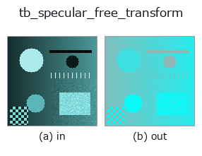

typed op• Data kinds: rgbimage → rgbimage
• Call: fullseye.apply(img, "tb_specular_free_transform", a=0.5, b=0.5) (2-D model = एक image + दो scalar knobs a,b∈[0,1])

*Figure synthetic 128×128 input पर सच में चलाकर मिला output है। बाईं ओर input, दाईं ओर output। Point clouds ऊपर से देखे गए scatter के रूप में (brightness = z), 1-D series line के रूप में, volumes z दिशा में maximum-intensity projection के रूप में, videos बीच के frame के रूप में, complex images amplitude के रूप में, और जो return values चित्र नहीं बन सकते वे स्वयं values के रूप में दिखाए जाते हैं।*
*Knob a output नहीं बदलता (मापा गया: 0.1 / 0.5 / 0.9 पर एक जैसा)।*
*Knob b output नहीं बदलता (मापा गया: 0.1 / 0.5 / 0.9 पर एक जैसा)।*
Stages (पहले आने वाले ops → यह op, बाएँ से क्रम में):
▸ tb_specular_free_transform: stages का figure (docs site)
दूसरी images पर भी (synthetic scene / photo / coins। ऊपर की row में inputs, नीचे की row में उनके outputs। Knobs default पर):
▸ tb_specular_free_transform: दूसरी images पर output (docs site)
illuminant direction को project करके हटाता है: image का वह भाग जिसे highlight छू नहीं सकता। → (H, W, 3)।
> नीचे का विस्तृत विवरण मूल text में है — सारांश और headings का अनुवाद हो चुका है।
I - (I.G) G for the unit illuminant colour G. Under the dichromatic model the interface term is m_s * G, so it lies entirely in the removed direction and the result is invariant to any specular term whatsoever — exactly, for any lobe shape, any strength, any spatial pattern. That is the specular-invariant subspace of Mallick et al. (2005); this operator is the projection itself, with no rotation into named channels, so it stays in RGB and composes with the rest of the family.
Use it when the *shape* of the specular lobe is unknown or the surface is textured — feature matching, edge detection and correlation all work in this subspace without any of the assumptions specular_diffuse_split needs.
This is a projection, not a picture. The result loses one of three degrees of freedom (its component along G is exactly zero everywhere) and, for an image with negative values after black-level subtraction, keeps them. It is not a displayable "highlight-removed photo" and does not claim to be; for that, use specular_diffuse_split.
Raises ValueError: *image_rgb* is not a valid (H, W, 3) linear RGB image (see specular_diffuse_split); *illuminant_rgb* is not a non-zero 3-vector.
Typed bridge of the specular op specular_free_transform into the 2-D evolution registry: the same implementation, called under the op(v, a, b) convention. This op has no tunable parameter; a and b are unused.
• Sample data catalog (DL URL / license) — 2-D के लिए skimage.data (BSD/public) + synthetic, 3-D के लिए real data sources (Stanford/PDS आदि) के DL URL।
• Operators का स्रोत और संदर्भ — इस op family के मूल research/methods के स्रोत।
नीचे का program सच में चलता है, यह जाँचा गया है (figure वाला ही input)। Studio की help में यह block buttons बन जाता है, जिनसे इसे वहीं load करके चलाया जा सकता है।
img_to_rgb 0.50 0.50 tb_specular_free_transform 0.50 0.50
▸ यह pipeline load करें · Load करके चलाएँ
नीचे के उदाहरण मूल ledger op specular_free_transform को call करते हैं। यह bridge op वही implementation है, बस fn(v, a, b) convention के अनुसार ढाला गया है, इसलिए व्यवहार वैसा ही लागू होता है (केवल call का रूप अलग है)।
• poc_leaf_disease_area — py -3.11 examples/poc_leaf_disease_area.py
• specular_photometric — py -3.11 examples/specular_photometric.py
rgbimage को input के रूप में लेते हैं)identity · tb_wetness · tb_sensor_capture · tb_specular_diffuse_split · tb_specular_coefficient_map · tb_rgb_to_quaternion
typed)tb_points_to_voxel · tb_estimate_point_normals · tb_iss_keypoints · tb_project_points · tb_render_point_depth · tb_statistical_outlier_removal · tb_radius_outlier_removal · tb_voxel_grid_downsample
*Provenance: ops.py — 2D operator registry. यह per-op note tools/opdocs.py md से अपने-आप generate होता है (हाथ से edit न करें)।*
© 2026 Kazufumi Furuse — Fullseye operator documentation. Licensed under Apache-2.0.